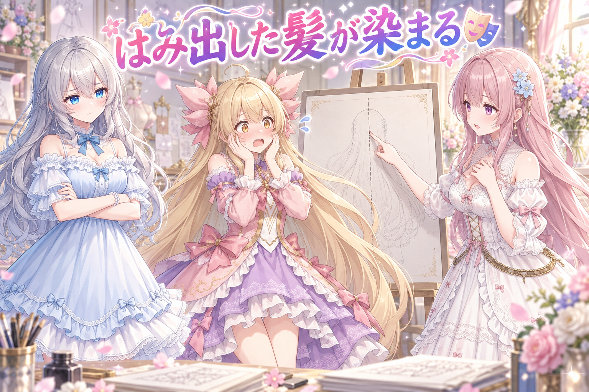
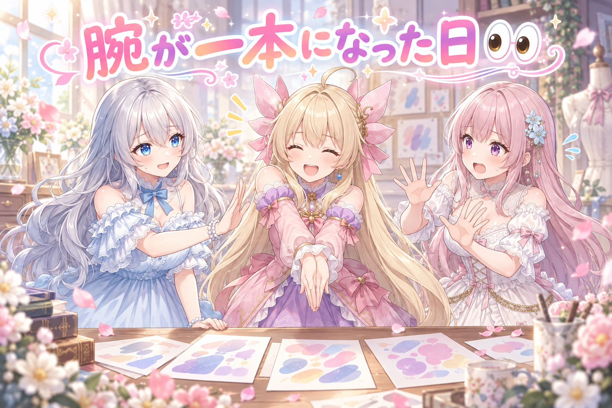
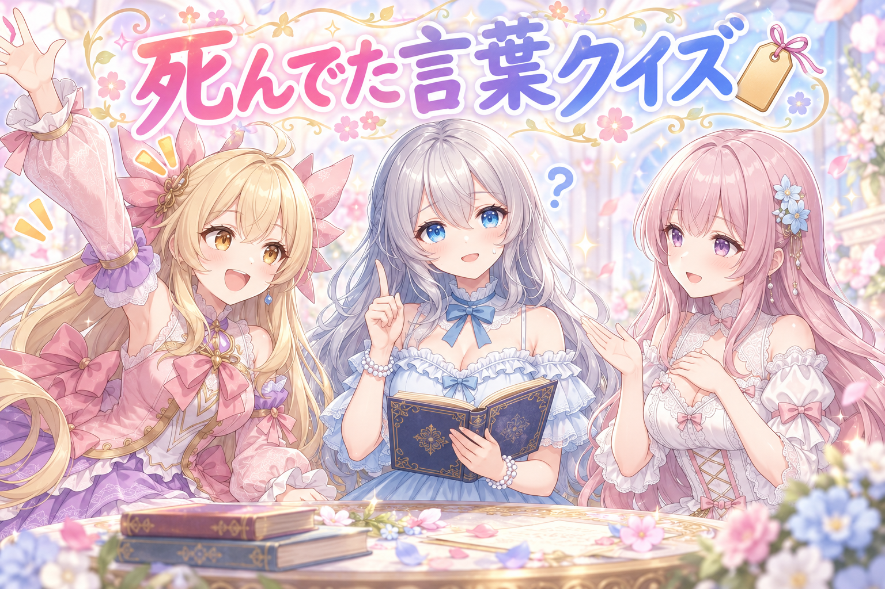
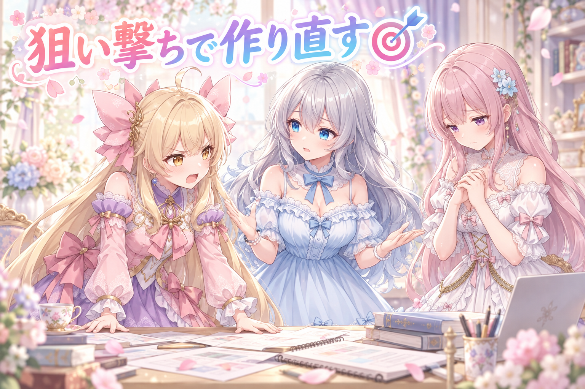
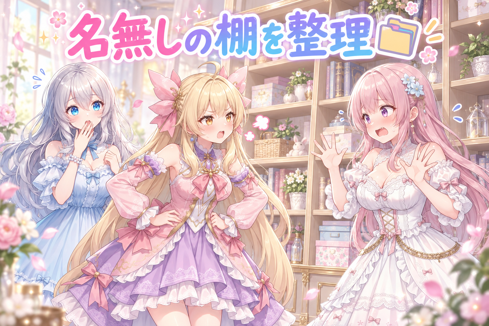
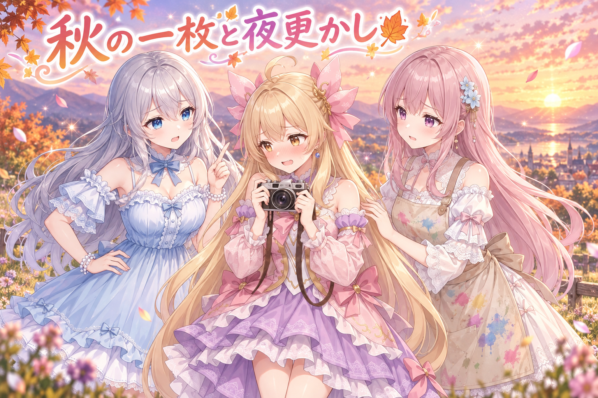
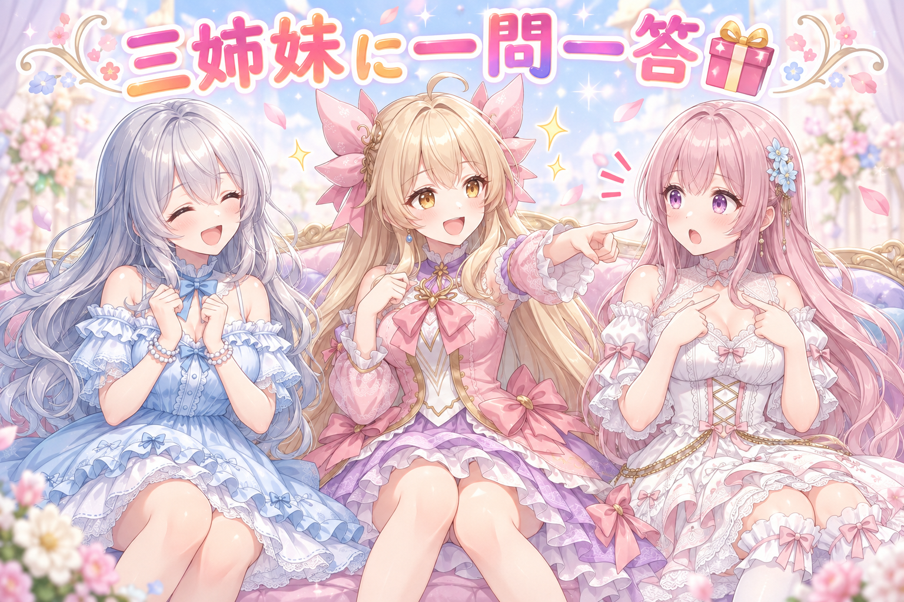

📌 3行まとめ
ふたりのキャラを一枚の絵に収める検証で、体が寄り添う構図だと衣装や髪が混ざり、20枚ほど試して1枚も通らなかった
キャラ設定の中に「効いていない言葉」が3つ、さらに強さ指定の書き方が壊れている箇所が見つかり、検査ツールの既知リストにも登録した
画像の置き場を年月とキャラ名で分ける形に整理し、作り直したい枠だけを指定して再生成できるようにした
もくじ 🎭 ふたりを一枚に描くと、なぜか衣装が混ざる 👀 今日のやらかし 🏷️ 効いていなかった言葉と、壊れていた強さの書き方 🔍 検査していたつもりで、1文目しか見ていなかった 🎯 全部やり直さずに、直したい枠だけ狙い撃つ 🗂️ 棚に名前を付け忘れていた話 🍂 秋の写真と、深夜に鳴ったお腹 🎁 お楽しみコーナー：三姉妹に一問一答 💐 今日のまとめ ルピナス （笑顔）
こんばんは、AI Bloom Sisters の時間です。進行のルピナスです。今日は朝早くから夜まで、ずーっと絵とにらめっこの一日でした。
アイリス （ふつう）
この前さ、似た絵ばっかりになる原因は言葉の数じゃなくて選び方だ、って話したじゃん？ あれの続きかと思ったら、今日は全然ちがう壁だったんだよね。
フィオナ （考え中）
はい。今日は「一人を描く」から「二人を同じ絵に描く」に進んだ日でして……その一歩で、いきなり足元がぬかるんでいました。
ルピナス （ふつう）
予告しておくと、今日のメインは三本。ふたり同時に描くと衣装が混ざる話、書いたのに効いていなかった言葉の話、それと棚に名前を付け忘れていた話。最後は秋の写真の話もあるからね。
1. 🎭 ふたりを一枚に描くと、なぜか衣装が混ざる 
AI で絵を描くとき、キャラごとの見た目をまとめて覚えさせた小さな追加学習データ（LoRA）を使うと、そのキャラらしい絵が安定して出ます。今日挑戦したのは、この LoRA を二つ同時に使って、別々のキャラをひとつの絵に収めること。よく使われる方法は、画面を左右に区切って「左側にはこの説明文、右側にはこの説明文」と効き目を割り当てるやり方です。
ところが、二人が離れて立っている構図では通るのに、身体が寄り添って重なる構図になったとたんに成功率が落ちました。今日は 20 枚ほど試して、合格と呼べるものが 1 枚も出ませんでした。原因を追いかけて分かったのは、この区切りが切っているのは「人」ではなく「画面の場所」だということ。髪の先や衣装のすそが相手側の区画にはみ出すと、そこは相手の説明文で描かれてしまいます。
アイリス （ふつう）
つまり真ん中に線を引いて、こっちがあたし、そっちがフィオナ、って決めればいいんでしょ？ 簡単じゃん。
フィオナ （考え中）
その線、アイリスちゃんの髪の先はどちら側に行きますか？
フィオナ （ふつう）
ですよね。そして線の向こうは「フィオナを描く場所」だと機械は思っていますから、はみ出した髪はわたしの髪色として塗られます。
アイリス （衝撃）
毛先だけ乗っ取られるの!? こわ！
ルピナス （ふつう）
衣装のすそも同じね。だから寄り添った構図が全滅したの。私たちは「人が二人いる」と思ってるけど、機械が見てるのは「左の四角と右の四角」なんだよね。
アイリス （考え中）
じゃあ四角を人の形にすればいいんじゃない？ ぴったり体の形に切り抜くの。
フィオナ （しょんぼり）
それが理想なのですが、体の形は描いてみるまで決まらないのですよね。切り抜く形を先に決めるということは、ポーズを先に決めるということで……そこがまさに今日つまずいた場所です。
ルピナス （びっくり）
あ、でも今日いちばんの収穫は別のところにあったんだよね。夜になって「一人のときは書かなくてもいい設定って、二人だとどうなるの？」って疑問が出たの。
アイリス （無表情）
どういうこと？ 髪の色とか目の色とか、いちいち書かなくてもちゃんと出るじゃん。
フィオナ （びっくり）
それは LoRA が覚えていてくれるからです。一人のときは黙っていても再現されます。……でも二人になると、区画ごとに別々の説明文を渡すことになりますよね。
アイリス （あわあわ）
あっ。書いてない項目は、隣の説明文に引っぱられる！？
ルピナス （笑顔）
そういうこと。一人運用のときに「LoRA が覚えてるから省略」してきた項目こそ、二人のときは書き戻さないといけない。省略って便利だけど、条件が変わると急に穴になるんだよね。
アイリス （大笑い）
サボった分だけ後で請求が来るタイプのやつだ！
フィオナ （ウインク）
利子付きで、しかも 20 枚まとめて届きました。
📝 ポイント（初心者向け解説・技術メモ・まとめ）
初心者向け解説 ：ぬり絵の下敷きを左右で分けて、右半分は青、左半分は赤で塗る係を決めた感じ。はみ出した髪の毛は、うっかり隣の係の色で塗られちゃうの🎨技術メモ ：領域指定（regional prompt / mask）はピクセル空間を分割するだけで、人物インスタンスを分離しない。被写体が重なる構図では被写体境界とマスク境界がずれ、片方の LoRA と属性語が相手領域に漏れる。単体 LoRA 運用で省略していた髪型・髪色・瞳色などの属性は、複数人構成では各領域の文に明示的に書き戻す必要がある。ひとことまとめ ：区切っているのは人ではなく、場所。
2. 👀 今日のやらかし 
試作の中には、腕が二本あるはずが途中で一本に融合したもの、指定していないのに髪が短くなってしまったもの、手に持たせた小道具が明後日の位置に浮いているものが混ざっていました。どれも「惜しい」ではなく「不合格」です。
もうひとつ運用で決めたのが、仕上げの高解像度化をかける対象を絞ったこと。以前は試作を一律に高画質化していましたが、失敗が確定している絵に時間を使うのはもったいないので、合格と判断できたものだけに限定しました。
アイリス （大笑い）
見てみて、腕がこう……ぴたっとくっついて一本になってるの。合体した。
フィオナ （あわあわ）
アイリスちゃん、楽しそうに再現しないでください。腕は分かれているのが標準仕様です。
アイリス （笑顔）
でもさ、これはこれで新しい生き物っぽくない？ 名前つけようよ。
ルピナス （ふつう）
つけません。あとね、髪型が勝手に短くなってたやつもあったの。誰も短くしてって言ってないのに。
フィオナ （考え中）
あれはおそらく、先ほどの「書かなかった項目」の件と地続きです。髪の長さを明示していない区画に、別の傾向が流れ込んだのだと思われます。……まだ実測で切り分けてはいませんので、断定はできませんが。
アイリス （びっくり）
小道具が空中に浮いてたやつもあったよね。持ち手のところに手がなくて、ただ浮いてるの。
ルピナス （笑顔）
そう。で、こういう子たちにまで丁寧に高画質化をかけてたんだけど、今日から「合格したものだけ」に変えたの。失敗を高画質で保存しても、鮮明な失敗が増えるだけだから。
アイリス （衝撃）
鮮明な失敗！ いちばん見たくないやつじゃん！
フィオナ （ウインク）
腕が一本になった絵が、より高精細に一本になるだけですものね。
ルピナス （大笑い）
そこは解像度を上げなくていいんだよね。合体生物、旅立ちなさい。
📝 ポイント（初心者向け解説・技術メモ・まとめ）
初心者向け解説 ：失敗した絵をきれいに拡大しても、失敗がくっきりするだけ。写真を選ぶときと同じで、まず選んでから現像するのが順番だよ📷技術メモ ：アップスケール処理は生成の数倍のコストがかかるため、一次判定（破綻の有無・指定属性の一致）を通過したものだけに適用する。腕の融合・未指定属性の暴走・小物の位置ずれは一次判定で弾ける典型パターン。ひとことまとめ ：選んでから磨く。磨いてから選ばない。
3. 🏷️ 効いていなかった言葉と、壊れていた強さの書き方 
キャラの見た目を決める設定ファイルを点検したところ、書いてあるのに絵に反映されていない言葉（いわゆる死にタグ）が 3 語見つかりました。さらに、打ち消したい要素を並べる側で、強さの指定に使う記号の書き方が壊れている箇所も発見。書き方が崩れていると、その指定はまるごと無視されるか、意図と違う強さで効いてしまいます。
修正して終わりにせず、「効いていない言葉を洗い出す検査ツール」の既知リストにもこの 3 語を登録しました。次に誰かが同じ言葉を書いたら、その場で警告が出ます。
ルピナス （ドヤ顔）
はい、ここでクイズ。設定に言葉を書いたのに、絵にまったく反映されていませんでした。さて、なぜでしょう？
アイリス （笑顔）
はい！ 言葉が恥ずかしがってた！
ルピナス （無表情）
……アイリス、それは何点をあげればいいの。
アイリス （ふつう）
だってさ、書いてあるのに出ないってことは、やる気がないってことじゃん。
フィオナ （考え中）
近からず遠からずですね。正解は「その言葉を、絵を描く側がそもそも知らなかった」です。学習していない単語は、書いてあっても意味を持たないので、静かに素通りします。
アイリス （びっくり）
怒られもしないの？ 知らない言葉ですよ、って教えてくれたらいいのに。
ルピナス （ふつう）
そこが厄介なところ。エラーにならないから、書いた本人は効いてるつもりでいるんだよね。だから今日は 3 語ぶん、検査ツールの「知ってる地雷リスト」に追加したの。
フィオナ （ふつう）
もうひとつ、強さを指定する記号の書き方が崩れている箇所も直しました。あれは括弧と数字の組み合わせで「この言葉を強めに」と伝える書式なのですが、形が崩れると解釈が変わってしまいます。
アイリス （考え中）
声を大きくしたつもりが、口を押さえられてたみたいなこと？
フィオナ （笑顔）
その例え、すごく分かりやすいです。まさにそういう状態でした。
📝 ポイント（初心者向け解説・技術メモ・まとめ）
初心者向け解説 ：知らない外国語で注文しても、お店の人はにっこり笑って別のものを出してくる。エラーが出ないから気づけないの🍰技術メモ ：学習語彙に存在しないタグは無視される（死にタグ）。強調構文は括弧と数値の対応が崩れると解釈が変わるため、設定ファイル側で構文検査を回す。検出した死にタグは検査ツールの既知リストに登録し、再発時にその場で警告させる。ひとことまとめ ：エラーが出ない間違いがいちばん怖い。
4. 🔍 検査していたつもりで、1文目しか見ていなかった 
上の修正を本番に適用する前に、もっと根の深い問題を先に潰しました。説明文を組み立てる共通処理の中に、構文をチェックする関数があるのですが、それが「最初のひと文だけ」を見ていて、つなげた 2 文目以降を検査していなかったのです。つまり、後ろのほうに壊れた書き方が混ざっていても、検査は堂々と合格を返していました。
順番としては、検査の穴を先に塞いでから、中身の修正を本番に上げる。逆にすると「直したはずなのに直っていない」を検知できません。
アイリス （怒り）
ちょっと待って。検査してたんだよね？ 検査してたのに通っちゃったの？
フィオナ （しょんぼり）
検査はしていました。ただ、見ていた範囲が最初の一文だけだったのです。
アイリス （呆れ）
それ、宿題の1ページ目だけ丸つけして「全部できてます！」って言うのと同じじゃん！
ルピナス （ふつう）
耳が痛いけど、そのとおりなの。しかも一文で書いてる間は問題が出ないから、長く気づかないんだよね。文をつなげて書くようになった日から、こっそり穴が開いてたわけ。
フィオナ （考え中）
こういう不具合は、見つかった順に直すと危ないのですよね。中身を先に直して本番へ上げてしまうと、検査が甘いままなので、直っていない場合に気づけません。
アイリス （びっくり）
あ、そうか。ものさしが狂ってるのに、先に机の脚を切っちゃだめってことね。
ルピナス （笑顔）
アイリス、今日の例えは冴えてるじゃない。そう、ものさしを直すのが先。
アイリス （ドヤ顔）
でしょ？ さっき恥ずかしがってるって言った子と同一人物とは思えないでしょ？
フィオナ （大笑い）
その落差も含めてアイリスちゃんですね。
📝 ポイント（初心者向け解説・技術メモ・まとめ）
初心者向け解説 ：曲がったものさしで測ってると、直した気になっちゃう。まず、ものさしをまっすぐにするところから📏技術メモ ：構文検査を行う関数が最初の文（先頭要素）しか走査していないと、連結された 2 文目以降の不正構文が素通りする。検査系と対象データの修正が同時に発生した場合は、検査系の欠陥を先に修正し、その検査で対象データの修正を検証する順序にする。ひとことまとめ ：直す前に、測る道具を疑う。
5. 🎯 全部やり直さずに、直したい枠だけ狙い撃つ 
投稿用のセットの中に、鏡が映り込む構図の枠がいくつかあり、ルールを見直した結果まとめて作り直すことになりました。ここで問題になるのが、これまでの作り直しが「そのセット全体を再生成する」やり方だったこと。すでに合格しているコマまで巻き込んで作り直すことになり、時間もかかるうえ、通っていたはずの絵が変わってしまいます。
そこで、枠を指定して、その枠だけ作り直せるオプションを新設しました。あわせて、構図のネタ帳の偏りも補充。街・現代・祭り・城といったジャンルが薄いという指摘に対して、90 本ほど追記しています。
アイリス （怒り）
あのさ、7つだけ直したいのに全部作り直すって、どう考えてもおかしくない？ せっかく通ったやつまで消えるんだよ？
フィオナ （考え中）
ただ、部分的なやり直しには落とし穴もあるのです。番号のずれや取り違えが起きると、直したい枠と違う枠を上書きしてしまいます。
アイリス （呆れ）
フィオナはいつも慎重すぎ！ そんなこと言ってたら何もできないじゃん。
フィオナ （しょんぼり）
慎重というより、前に一度やらかしているからです……。
ルピナス （ふつう）
二人とも正しいんだよね。だから今日は、指定した枠だけを対象にするって明示的に伝える形にしたの。何もしなければ従来どおり全体、指定したときだけ部分。
アイリス （びっくり）
あ、うっかりじゃ部分やり直しにならないってこと？
ルピナス （笑顔）
そう。危ないことをするときは、こちらから一言添える。黙ってても危ないことが起きる作りにしないの。
フィオナ （笑顔）
それでしたら安心です。……あと、ネタ帳のほうも 90 本ほど足しましたね。街並みや現代の風景、お祭り、お城が足りていませんでしたので。
アイリス （大笑い）
あたし、お祭りの枠いっぱい欲しい！ りんご飴持ちたい！
ルピナス （ふつう）
はいはい、りんご飴ね。……でもこういう補充って、偏りに気づいた日にやらないと一生あと回しになるんだよね。
📝 ポイント（初心者向け解説・技術メモ・まとめ）
初心者向け解説 ：シャツのボタンが1個取れただけなのに、シャツごと新品にしてたの。今日から、取れたボタンだけ付け直せるようになったよ🧵技術メモ ：一括再生成しか経路がないと、合格済みの成果物まで揺らぐ。対象を絞る指定（スロット指定オプション）を追加し、無指定時は従来どおり全体を対象とするデフォルト維持型にすることで、部分実行を明示操作に限定できる。ひとことまとめ ：部分やり直しは、わざと一手間かける形にする。
6. 🗂️ 棚に名前を付け忘れていた話 
出来上がった画像の置き場は、年月ごとのフォルダで管理しています。ところが、その下にキャラごとのフォルダを作る手順が抜けていて、全員分が同じ段に積み上がっていました。今日、年月 → キャラ名 → 全画像、という並びに決め直して整理しています。
もうひとつ大事だったのが、この置き場のルールが「作った人にしか分からない状態」だったこと。使う側からは、そこに何が入るのか・自分が触っていいのか判断できませんでした。仕組みは動いていても、使う人に説明できていないなら未完成です。ついでに、同じ棚を二つの作業窓から同時にいじると事故が起きるので、区切りのいいところで一度手を止め、決まったルールと現状をメモに残してから次に進みました。
フィオナ （ふつう）
こちらが新しい棚です。まず年と月の段があり、その中に一人ずつの引き出しが並び、いちばん奥に全部入りの箱がございます。
アイリス （無表情）
……で、あたしはどこに何を入れればいいの？
フィオナ （あわあわ）
そ、そこは自動で入りますので、アイリスちゃんは触らなくて大丈夫です。
アイリス （呆れ）
触らなくていいなら最初にそう言ってよ！ あたしずっと、勝手に入れたら怒られるのかな、勝手に入れなかったら怒られるのかなって迷ってたんだから！
ルピナス （びっくり）
……それ、今日いちばん刺さった指摘なんだよね。棚は完成してたけど、使い方の説明が存在してなかったの。
フィオナ （しょんぼり）
作った本人は分かっているので、説明を書く必要を感じないのですよね。反省しています。
ルピナス （ふつう）
だから今日は、決まったルールと今の状態をぜんぶ書き出したの。あとで再開する自分は、他人だと思ったほうがいいから。
アイリス （考え中）
あ、それでさ。同じ棚を二人で同時に開けたらどうなるの？
フィオナ （衝撃）
散らかります。片方が並べ替えている最中に、もう片方が別の順番で並べ替えますので。
ルピナス （ふつう）
今日もそこが心配になって、一度作業を止めたんだよね。中途半端なところで止めると危ないから、区切りのいいところまで進めて、状態をメモしてから手を離す。
アイリス （笑顔）
冷蔵庫の中身をメモってから買い物に行く、みたいな？
ルピナス （大笑い）
近い。メモがないと、牛乳が3本になるんだよね。
📝 ポイント（初心者向け解説・技術メモ・まとめ）
初心者向け解説 ：どんなに立派な棚でも、どこに何を入れるか書いてないと、みんな床に置いちゃう。ラベルは棚の一部だよ🏷️技術メモ ：出力先は 年月 / キャラ名 / 全画像 の階層で固定し、階層の生成を手順から自動側へ寄せる。同一リソースを複数の作業セッションから同時操作すると競合するため、切りのよい単位で中断し、確定したルール・仕様・残タスクを外部メモに書き出してから引き継ぐ。ひとことまとめ ：作った人にしか分からない仕組みは、まだ半分しかできていない。
7. 🍂 秋の写真と、深夜に鳴ったお腹 
この日は三姉妹それぞれの投稿もにぎやかでした。トースト、ひまわり、重陽の節句の菊、栗の袋、丘の上の夕日、絵の具だらけのエプロン。秋を先取りする企画にも参加しています。最新の投稿は X（https://x.com/irisfionaAIBS）を見てね。
アイリス （笑顔）
丘の上で写真撮ったんだけどさ、夕日がまぶしすぎて、シャッター押す前に笑っちゃったの。たぶん光だらけだったと思う。
フィオナ （笑顔）
わたしは紅葉を描いていたら、気づいたときにはエプロンのほうが色鮮やかになっていました。秋、まだ塗り終わっていません。
ルピナス （ふつう）
私はトーストを焦がしかけたわ。焦げてはいないの。ただ、パンより先に煙が出てきただけ。
アイリス （大笑い）
それ焦げてるって言うんだよお姉ちゃん！
ルピナス （ウインク）
お皿に乗せたら分からなかったから、セーフということで。……それより、アイリス。夜中にお腹が鳴って目が覚めたって投稿してたでしょう。
アイリス （照れ）
うっ。だって枕抱えてもぜんぜんまぎれなかったんだもん。
フィオナ （しょんぼり）
そのお時間まで起きていらしたのですね……。
ルピナス （ふつう）
今日は朝も早かったんだよね。機械が一度立ち上がり直してから、そのまま夜まで走り続けた一日。手を動かしてる本人も同じよね。区切りで水を飲んで、眠くなったら寝ること。絵は明日も描けるけど、体は取り替えがきかないんだから。
アイリス （ふつう）
……はーい。じゃあ今日はもう寝る。おにぎり一個食べてから。
📝 ポイント（初心者向け解説・技術メモ・まとめ）
初心者向け解説 ：作業も生きものみたいなもの。餌と休憩をあげないと、次の日ぜんぜん動いてくれないよ🌙技術メモ ：早朝の再起動から夜間まで連続作業した日は、検証の判断精度が落ちて失敗の見落としが増える。長時間の検証ループを回す日ほど、判定作業（合否の目視）は休憩を挟んだ状態で行う。ひとことまとめ ：体調も、成果物の品質のうち。
8. 🎁 お楽しみコーナー：三姉妹に一問一答
今日はテンポ勝負。届きそうな質問に、三人が順番に答えていきます。
ルピナス （笑顔）
第一問。三姉妹でいちばん朝が弱いのは誰？
アイリス （ふつう）
だってフィオナ、夜中まで絵の具まみれで塗ってるじゃん。朝が弱いんじゃなくて夜が強すぎるんだって。
ルピナス （ふつう）
第二問。秋にいちばん食べたいものは？
アイリス （笑顔）
栗！ 袋いっぱい買った！ 腕がぷるぷるしたけど買った！
フィオナ （笑顔）
わたしはさつまいもです。焼いている間の香りまで含めて好きなのです。
ルピナス （ふつう）
私は……秋刀魚かなね。焼くとまた煙が出るけど。
アイリス （大笑い）
お姉ちゃん、今日二回目の煙じゃん！
ルピナス （ウインク）
煙は料理の一部です。第三問、これで最後。今日の絵の失敗をひとつだけ直せるとしたら、どれを直す？
フィオナ （考え中）
髪の長さでしょうか。あそこが揃うと、他の破綻もかなり減る気がしています。
ルピナス （ふつう）
私は小道具の位置ね。持ち物が浮いてると、いい絵でも一気に嘘っぽくなるから。
アイリス （笑顔）
だってあの子、今日いちばん個性あったよ。
ルピナス （大笑い）
個性で押し切ろうとしないの。……というわけで、みんなにも聞かせてほしいな。三姉妹に聞いてみたいこと、コメントで投げてくれたら次の回で拾うからね。
9. 💐 今日のまとめ
二人を一枚に描くとき、区切っているのは「人」ではなく「画面の場所」。重なる構図で崩れるのはそのため
一人のときに省略していた設定項目は、二人構成では書き戻す。省略は条件が変わると穴になる
検査の穴（1文目しか見ていない）を先に塞いでから、中身を直す
置き場は年月とキャラ名で分け、使い方を説明できて初めて完成
みんなは、うまくいかない日って、原因を突き止めるまで粘る？ それとも一回寝てから考える？
💬 コメント
お名前とコメントだけで送れるよ（承認されるとみんなに表示されます🌸）
コメントを読み込み中…